Tout d'abord c'est une association qui, à travers des ateliers interactifs et pédagogiques pour mieux comprendre les enjeux ecologiques, sensibilise aux l'impacts environnementaux dans le domaine du numérique. Ils fournissent
les outils(méthodes interactives avec des images) et l'accompagnement nécessaire afin de faire passer le message tout en laissant place à la réflexion et discussion. La Fresque du Numérique est plus qu'un simple atelier,
c'est une manière d'éveiller les consciences, favoriser le débat et inciter à agir de manière plus responsable dans un monde de plus en plus dépendant du numérique.
Comment se déroule l'atelier?
On est divisé en deux groupes pour un atelier qui se déroule en deux temps. D'abord, la création de la fresque avec quatre paquets que nous devons relier entre eux en plusieurs étapes. Ensuite, le quadrillage, où nous devons
juger de l’efficacité et de la facilité de certains gestes qui peuvent nous amener à nous questionner et à réfléchir aux éventuelles possibilités pour réduire notre impact écologique.
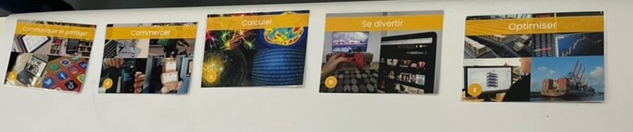
Cartes différentes utilisations d'Internet
Les cartes de début montrent les cinq principales utilisations d'Internet : communiquer et partager, commercer, calculer, se divertir et optimiser . Dans notre groupe, nous les avons intégrées dans notre fresque, car, d'un côté,
nous utilisons Internet pour accéder à ces usages, ce qui peut entrainer des effets liés à la santé mentale et à l'obsolescence psychologique. Contrairement à notre approche, l'autre groupe les a gardées comme base de départ.
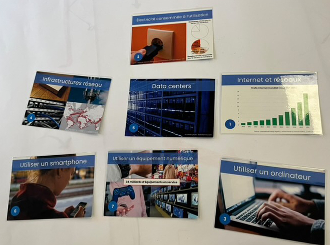
Cartes de début avec les bases
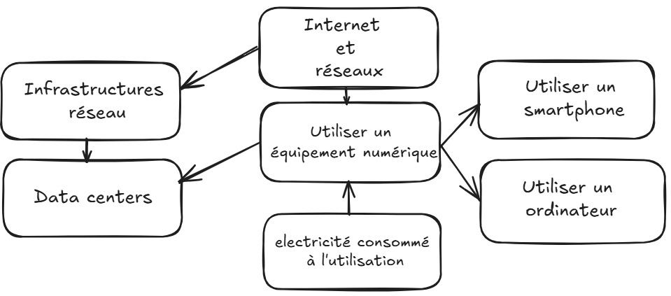
Cartes finales
Pour le premier paquet de cartes, on trouve les bases de l'utilisation du numérique : le réseau, les data centers, l'électricité et l'utilisation d'un équipement numérique. Pour les relier, nous sommes partis du principe que
l'électricité est nécessaire au fonctionnement de tous les appareils numériques. Ces derniers se connectent à Internet, qui repose sur des infrastructures permettant de desservir le monde ainsi que les data centers.
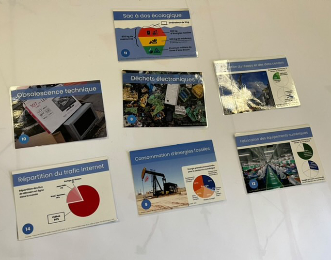
Cartes au delas des bases
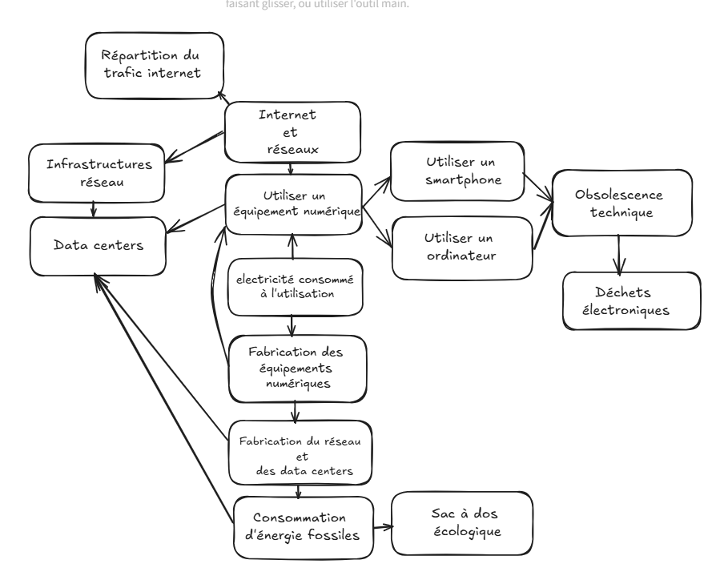
Cartes finales
Nous avons donc dû intégrer les nouvelles cartes avec les anciennes tout en gardant la cohérence. Les notions de fabrication et de déchets entrent en jeu et nous permettent de nous interroger sur l’éthique de notre consommation et sur tout ce que cela implique, avant et après. Par exemple, la fabrication des équipements numériques entraîne une forte consommation d’énergies fossiles et mobilise plus de 900 kg de ressources terrestres, qui seront
ensuite rejetées. Sans compter les litres d’eau utilisés, tout cela pour que, au final, les appareils doivent être remplacés tous les 2 à 3 ans afin de suivre les avancées technologiques. Cela génère près de 62 millions de tonnes de déchets électroniques par an dans le monde.
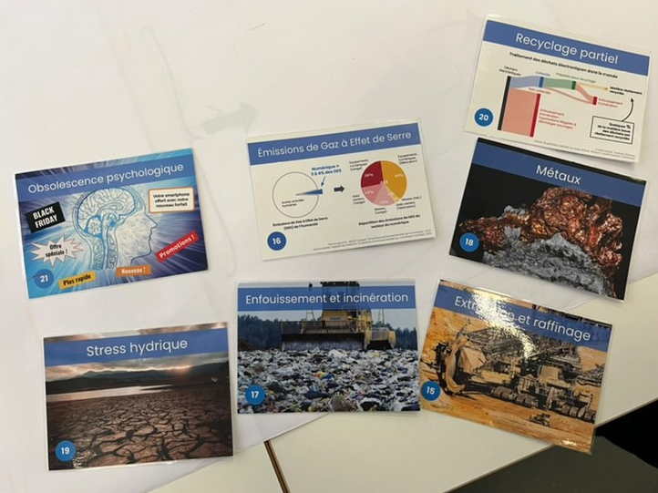
Cartes effets collatéraux
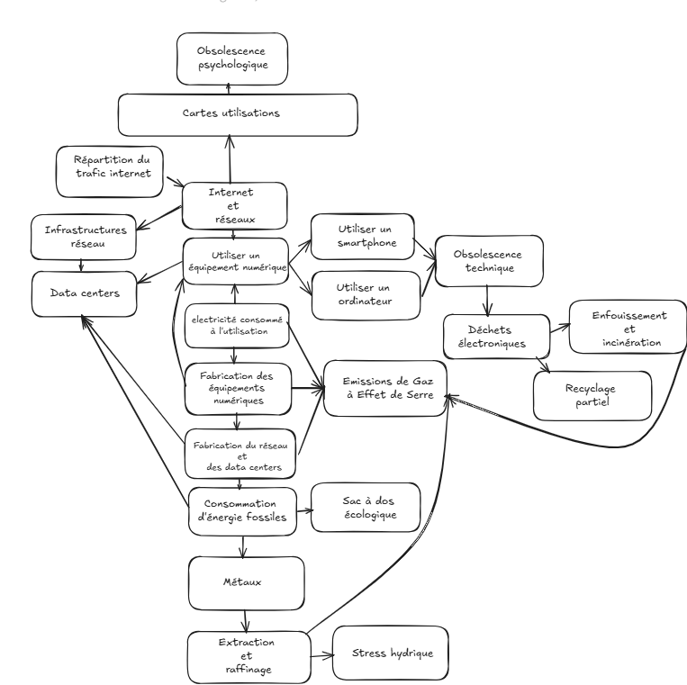
Cartes finales
Bien qu’il y ait un effort de recyclage partiel, ce ne sont que moins de 25 % des déchets numériques qui y parviennent, car tous les composants ne peuvent pas être recyclés ou ne sont pas pris en compte. De plus, 8 % de
ces déchets sont incinérés. Cependant, les déchets ne sont rien comparés à l’extraction des métaux qui composent nos appareils. Ce processus repose sur des machines pesant des centaines de tonnes, qui altèrent le paysage
sur leur passage, causant un stress hydrique tout en rejetant des gaz à effet de serre, comme l’ensemble du processus de fabrication. Les effets ne sont pas seulement néfastes pour l’environnement, mais aussi
pour nous, les consommateurs. Les entreprises nous poussent à consommer toujours plus, à acheter le dernier iPhone ou le nouveau gadget révolutionnaire. Nous sommes bombardés de publicités partout, que ce soit dans la vie
réelle ou sur Internet. De plus, les appareils ne sont
pas conçus pour durer : au fil des mises à jour, ils deviennent obsolètes, créant ainsi un cercle vicieux qui accroît non seulement les déchets numériques, mais aussi la production de nouveaux appareils.
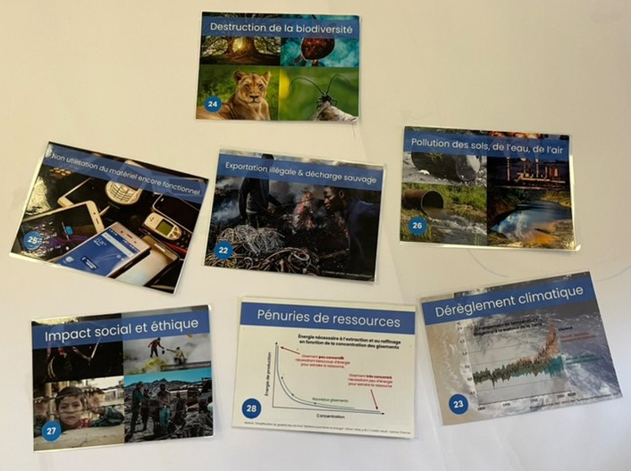
Cartes impacts à différentes échelles
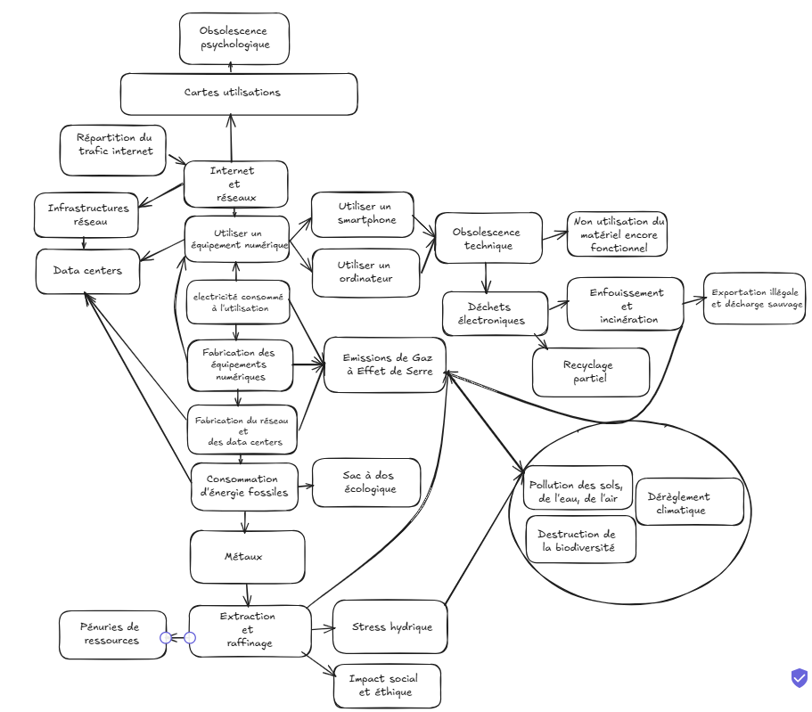
Cartes finales
Au-delà des déchets, du recyclage et de l'obsolescence, il y a aussi toutes les pertes autres, comme la non-utilisation des appareils fonctionnels qui finissent, comme le reste des déchets, exportés illégalement et créent des décharges
sauvages majoritairement en Afrique de l'Ouest, en Asie du Sud-Est et en Amérique Latine. Cela soulève une question d'éthique sociale, d'autant plus que l'exploitation massive se trouve dans ces mêmes régions. Mais
cela entraîne aussi, au fil du temps, des pénuries de ressources, obligeant à extraire encore plus profondément et à outrance, ce qui augmente encore l'impact déjà important de ce processus. Tous ces mécanismes, de l'extraction
à la fabrication jusqu'aux déchets générés, ont un impact direct sur notre biodiversité, détruisant les espaces naturels et les habitats des espèces, causant parfois l'extinction de certaines. En plus de la transformation
des terrains, il y a la
pollution générée par les machines et les usines, ce qui aggrave le dérèglement climatique déjà en cours.
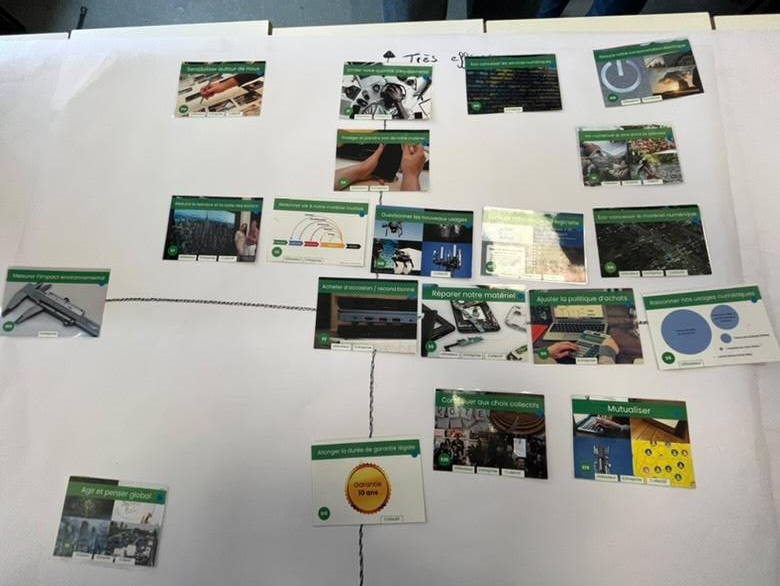
Quadrillage de possibilitées
Après avoir fini la fresque et en avoir discuté tous ensemble, nous avons dû remplir un quadrillage où, en abscisse, se trouvait le niveau de difficulté et, en ordonnée, le niveau d'efficacité. Nous devions donc juger des
méthodes proposées sur les cartes et les placer en conséquence. Dans les cartes, il y avait des méthodes applicables individuellement, par les entreprises et globalement, comme mutualiser les appareils, ce qui se fait déjà dans
certains pays, comme les machines à laver communes en Finlande, prendre soin de ses appareils ou les réparer pour qu'ils durent plus longtemps, ou acheter d'occasion. Mais il y a aussi des réformes dans la fabrication des appareils,
ainsi que des actions pour penser globalement, voire dénumériser. À la fin de l'exercice, nous devions choisir 2-3 cartes qui nous semblaient les plus pertinentes. Notre groupe a choisi de prendre soin de ses appareils afin de les faire durer plus longtemps et de ne pas renouveler nos appareils trop fréquemment, ainsi qu’agir et penser globalement, ce qui a suscité pas mal de discussions sur la faisabilité, à l’échelle mondiale, de réformes
qui limiteraient certaines inventions, bien que pratiques, mais dont on pourrait se passer, comme les bornes de commande dans les fast-foods. Il y avait aussi la carte dénumériser tout autant controversée, qui a choqué plus
d’un, car une vie sans technologie aujourd’hui semble inconcevable. Or, fut un temps où le monde vivait et bougeait sans tout cela. Bien sûr, il ne faut pas pousser à l’extrême, mais limiter raisonnablement l’utilisation de la technologie à l’échelle individuelle pourrait avoir un énorme impact si la majorité s’y engage.
Avis et résumé
Lors de l’atelier, on a pu créé une fresque en reliant différentes cartes représentant les bases du numérique, ses impacts (fabrication, déchets, extraction de ressources) et les solutions possibles pour réduire ces effets. Les solutions
proposées incluent la réparation et la prolongation de la durée de vie des appareils, l’achat d'occasion, ou encore la réduction de l’usage de certaines technologies. Les discussions mettent en lumière des problématiques comme l’obsolescence
des appareils, l’exploitation des ressources dans des pays en développement, et la pollution liée à la production et aux déchets électroniques. Ces processus affectent la biodiversité, les écosystèmes, et contribuent au dérèglement
climatique. Selon moi, c’était un excellent moyen de sensibiliser à l'impact environnemental du numérique et cela nous a permis d'avoir un moment de discussion à ce sujet, voire d'envisager d'agir nous-mêmes. Nous avons appris de nombreuses
statistiques que nous ignorions, comme toutes les ressources utilisées et jetées lors de la fabrication, ainsi que l'impact des déchets numériques auxquels on ne pense pas forcément. Tout est lié et a un énorme impact sur notre planète.
Nous avons également discuté de solutions, certaines faciles à appliquer, même pour nous, l’objectif étant que chacun réduise son impact en faisant des efforts dans ce cycle. Personnellement, l'écologie est un sujet qui m'interresse
énormément et cet atelier m’a beaucoup intéressé en m’apprenant des choses dont j'ignorais l’existence.
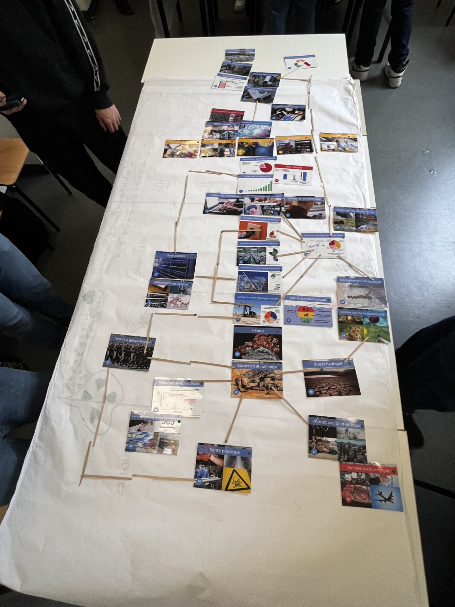
Fresque final groupe1
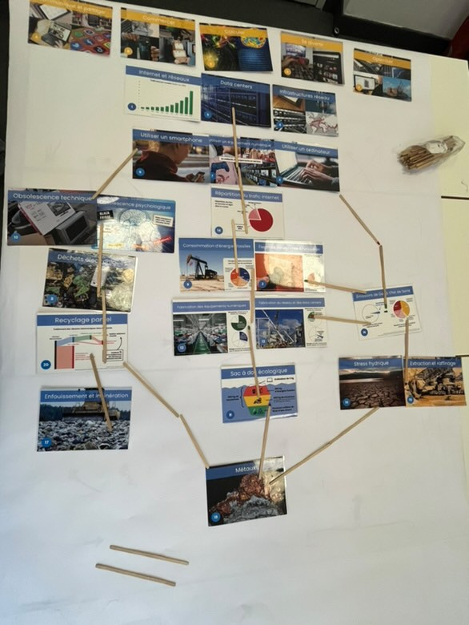
Fresque final groupe2